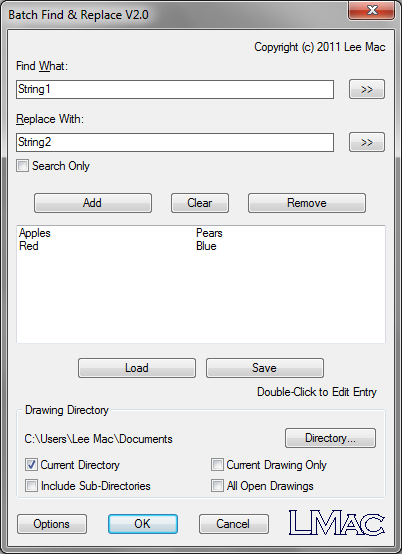
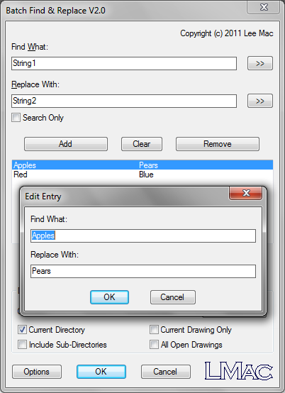
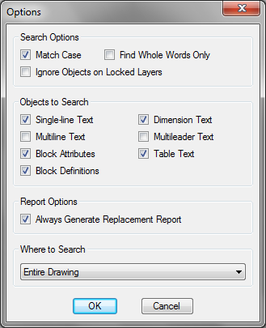

Batch Find & Replace Text
This page is delivered for consistency purposes only, as part of the LeeMac sample module of DynALisp, which shows how DynALisp turns existing AutoLISP programs into a module. The program and its description are the work of Lee Mac, who keeps all the credit for them. The original page, with the latest version, is on Lee Mac's website: https://lee-mac.com/bfind.html
| Function Syntax | LM-BatchFindAndReplace – original syntax: BFind (see aliases) |
| Current Version | 2.0 |
| Compatible with AutoCAD for Mac? | No |
| Compatible with AutoCAD LT? | No |
| Original Page | lee-mac.com/bfind.html |
Program Description
This program uses ObjectDBX to perform multiple text replacements in the current drawing, all open drawings, or across a complete directory (and optionally subdirectories) of drawings. The program has the ability to search Text, MText, Block Attributes, Multileader Text, Table Cell Text, Dimension Override Text and all of these items within Block Definitions.
The user may replace multiple search strings, and load & save lists of search strings for future use, saving time in program data entry.
Users may perform a complete Find & Replace operation, or merely search for potential replacements using the 'Search Only' option. Following a search operation, a report is displayed informing the user of the replacements which would be performed should the user proceed with the replacement. The report also displays the object containing the text to be replaced, along with the entity handle of the object, and the drawing filename in which the object resides.
The program provides the user with additional refinement options, as displayed in the Options Dialog. This enables the user to control which objects are searched, whether locked layers are included in the replacement, search item case-sensitivity and whether the search item must appear as a complete word to be replaced. The user can also restrict the search to Model space, Layout space or both.
The generation of a report following a text replacement may also be controlled within the Options Dialog (the report will always be created following a search operation).
Dialog Preview


Options Dialog

Known Restrictions
Please be aware that the BFind application is not entirely bug-free, and I would advise against its usage in conjunction with MText objects to which multiple style overrides have been applied through the MText Editor. However, it should, in most cases, perform successfully.
Below is an incomplete list of known issues:
-
Save Format
All drawings processed by the application will be saved to 'native' format (that is, the highest version available in the host application - i.e. running the program in AutoCAD 2011 will cause all drawings to be saved to 2010 format, or running in AutoCAD 2013 will save drawings to 2013 format).
The ActiveX save method (equivalent to the AutoCAD QSAVE command) is unavailable when interfacing with drawings through ObjectDBX, and so programs must use the saveas method to save any changes performed to the drawing database. Usually this method accepts a drawing version parameter which allows the method to save the drawing in the same format as configured in the AutoCAD 'Options' menu, however, due to a bug with this method when used in conjunction with ObjectDBX, the method will not accept the version parameter.
-
Position of Non-Left Justified Attributes
When using an ObjectDBX interface to modify the content of attribute references which do not have justification set to 'Left', there is a known bug which results in the attribute position not being updated following a change to the text field length (e.g. extending the text content of middle-center justified attributes will cause the attributes to become positioned off-center to the right).
A function has been included in the application which attempts to adjust the attribute position to account for this issue, however, this function is not 100% effective and a slight change in attribute position may be apparent. Note that the attribute position will be correctly updated when the attribute is next edited manually.
To modify attribute values without encountering this issue, please use my script-based Batch Attribute Editor program.
-
Drawing Thumbnails
Due to another known bug with the ObjectDBX interface, drawing thumbnails are lost when drawings are saved by the application. Drawing file thumbnails are fully restored following the next 'manual' save.
-
Curly Braces
The application is unable to search for the curly brace characters { and }.
-
Wildcards
The program does not currently support the use of wildcard patterns in search terms.
Bundled program notes
;;-------------------------=={ Batch Find & Replace }==------------------------;;
;; ;;
;; Will Find and Replace multiple strings entered by the user within Text, ;;
;; MText, Block Attributes, MLeader Text, Table Text and Dimensions within the ;;
;; current drawing, all currently open drawings and/or a directory ;;
;; (and subdirectories) of drawings. ;;
;; ;;
;; If the 'Block Definitions' option is selected, all instances of the ;;
;; aforementioned text objects residing within block definitions are included ;;
;; in the search domain. ;;
;; ;;
;; Furthermore the user may choose which objects to search, whether the find ;;
;; string is case sensitive, and whether to restrict the search to whole words ;;
;; only. ;;
;; ;;
;; ---------------------------------- ;;
;; Example: ;;
;; ------------ ;;
;; Find: "is" ;;
;; Replace With: "be" ;;
;; String: "This Is a test" ;;
;; ;;
;; | [x] Match Case | [ ] Match Case | ;;
;; | [ ] Whole words only | [ ] Whole words only | ;;
;; | This Is a test | This Is a test | ;;
;; | Thbe Is a test | Thbe be a test | ;;
;; |------------------------|-------------------------| ;;
;; | [x] Match Case | [ ] Match Case | ;;
;; | [x] Whole words only | [x] Whole words only | ;;
;; | This Is a test | This Is a test | ;;
;; | This Is a test | This be a test | ;;
;; ;;
;; ---------------------------------- ;;
;; ;;
;; The user can also choose to 'Ignore Locked Layers'; with this option set, ;;
;; all objects residing on Locked Layers are excluded from the search. ;;
;; ;;
;; The 'Where to Search' panel offers the ability to perform the find & replace ;;
;; operation througout the entire drawing, or restrict the search to model ;;
;; space or layout space only. ;;
;; ;;
;; If 'Search Only' is checked, drawings will be searched for each 'Find' ;;
;; string in the list, but no replacements will be made. Upon completion of ;;
;; the search, a CSV report will be displayed should a match be found. ;;
;; ;;
;; When performing replacements, the creation of a 'Replacement Report' may be ;;
;; toggled using the relevant setting on the 'Options' dialog. ;;
;; ;;
;; Note that a Regen may be required to view changes to open drawings. ;;
;; This could be accomplished programmatically, but has been omitted for better ;;
;; performance. ;;
;; ;;
;;-------------------------------------------------------------------------------;;
;; ;;
;; FUNCTION SYNTAX: BFind ;;
;; ;;
;; Notes: ;;
;; --------- ;;
;; As expected, the known bug with ObjectDBX arises with regards to attribute ;;
;; alignment following modification. A sub-function has been included in an ;;
;; attempt to correct the change in position, however, a slight shift in ;;
;; position may be noticed. The attribute is realigned when the block is moved ;;
;; manually. ;;
;; ;;
;; Also, when using the Batch Find and Replace, drawing thumbnails are lost ;;
;; upon saving with ObjectDBX. These return when the drawing is saved manually. ;;
;; ;;
;;-------------------------------------------------------------------------------;;
;; ;;
;; Author: Lee Mac, Copyright © 2011 - www.lee-mac.com ;;
;; ;;
;;-------------------------------------------------------------------------------;;
;; ;;
;; With additional thanks to Joe Burke for his tremendous help towards using ;;
;; Regular Expressions to eliminate the problem of MText formatting codes when ;;
;; performing replacements. ;;
;; ;;
;;-------------------------------------------------------------------------------;;
;; Version: ;;
;; ;;
;; 1.0: 24/05/2010 - First Release ;;
;;-------------------------------------------------------------------------------;;
;; 1.1: 26/05/2010 - Added Options Button. ;;
;; - Updated String Replacement functions to allow for case ;;
;; sensitivity options. ;;
;; - Upgraded StringRep function to allow replacement string ;;
;; to contain find string. ;;
;; - Fixed bug causing an unsaved drawing to be saved. ;;
;;-------------------------------------------------------------------------------;;
;; 1.2: 29/05/2010 - Added ability to perform multiple replacements. ;;
;;-------------------------------------------------------------------------------;;
;; 1.3: 31/05/2010 - Added ability to edit find and replace entry by ;;
;; double-clicking. ;;
;; - Added 'Table Text' object to Options Dialog. ;;
;; - Added 'Find Whole Words Only' option to Options Dialog. ;;
;; - Redesigned Options Dialog to accommodate new toggles, ;;
;; added mnemonics. ;;
;;-------------------------------------------------------------------------------;;
;; 1.4: 27/04/2010 - Replaced 'StringRep' function with functions utilising ;;
;; Regular Expressions to allow for MText formatting. ;;
;;-------------------------------------------------------------------------------;;
;; 1.5: 29/09/2010 - Reformatted code. ;;
;; - Drawings only saved if a replacement is made. ;;
;;-------------------------------------------------------------------------------;;
;; 1.6: 03/10/2010 - Added pick buttons to select text for Find/Replace ;;
;; strings. ;;
;; - Added 'Match Case' option ;;
;; - Added 'Find Whole Words Only' option ;;
;;-------------------------------------------------------------------------------;;
;; 1.7: 05/10/2010 - Added 'Search Only' option in which the program will ;;
;; search for multiple strings within the current drawing ;;
;; and/or a directory (and subdirectories) of drawings, ;;
;; subsequently producing a report detailing the number ;;
;; of occurrences of each string and list of possible ;;
;; changes should a replacement be performed. ;;
;; - Added error trap to drawing processing loop to prevent ;;
;; crash should one drawing error. ;;
;; - Added delay to DCL creation. ;;
;;-------------------------------------------------------------------------------;;
;; 1.8: 08/10/2010 - Added Load & Save buttons to allow a set of search ;;
;; items to be loaded and saved. ;;
;;-------------------------------------------------------------------------------;;
;; 1.9: 09/10/2010 - Fixed bug involving capital 'S' being removed from ;;
;; textstring during stacking formatting code removal. ;;
;; - Added code to allow 'special' characters to be used in ;;
;; Find string. ;;
;;-------------------------------------------------------------------------------;;
;; 2.0: 22/07/2011 - Majority of program rewritten and reformatted to ;;
;; include the following enhancements: ;;
;; - Fixed tab stops in dialog to allow the user to use the ;;
;; tab key to navigate between edit boxes. ;;
;; - Added 'Where to Search' panel to allow the user to ;;
;; restrict the search to Modelspace, Layout space or Both.;;
;; - Added 'Block Definitions' to list of objects to search ;;
;; to allow users to search text objects in blocks. ;;
;; - Added 'Current Directory' toggle to allow the user to ;;
;; quickly select the current working directory to be ;;
;; processed. ;;
;; - Added ability to add items to find/replace list by ;;
;; pressing Enter from within either edit box. ;;
;; - Added ability to press Enter after entering Save ;;
;; Reference without needing to click the OK button. ;;
;; - Added ability to press Enter after editing entry ;;
;; without needing to click the OK button. ;;
;; - Changed format of Saved Searches file for easier ;;
;; manual editing. ;;
;; - Added ability to process 'All Open Drawings'. ;;
;;-------------------------------------------------------------------------------;;
Command Names And Aliases
As in every DynALisp module, each program of this sample module has one main command, named LM-*, and the original command names of Lee Mac's page are kept as its aliases: they run the same command, and can be added, renamed or removed in Dyl-Suite (saved in Resources\Aliases.csv).
| Command | Aliases | Name |
|---|---|---|
| LM-BatchFindAndReplace | BFIND | Batch Find And Replace |